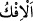
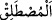
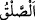
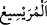
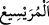

olmadığınız şeyi ağızlarınızda geveleyip duruyorsunuz. Bunun önemsiz olduğunu
sanıyorsunuz. Halbuki bu, Allah katında çok büyük (bir suç) tur.
16. Onu duyduğunuzda: “Bunu konuşup yaymamız bize yakışmaz. Hâşâ! Bu, çok
büyük bir iftirâdır.” demeli değil miydiniz?
17. Eğer inanmış insanlarsanız, Allah, bir daha buna benzer tutumu
tekrarlamaktan sizi sakındırıp uyarır.
18. Ve Allah âyetleri size açıklıyor. Allah, (işin iç yüzünü) çok iyi bilir, hüküm ve
hikmet sâhibidir.
19. Îmân edenler arasında çirkin şeylerin yayılmasını arzulayan kimseler için
dünyada da âhirette de çetin bir cezâ vardır. Allah bilir, siz bilmezsiniz.
20. Ya sizin üstünüze Allah’ın lütuf ve merhameti olmasaydı, Allah çok şefkatli
ve merhametli olmasaydı (hâliniz nice olurdu)!
Peygamberin eşine “bu ağır iftirâyı uyduranlar…” Gerçekte Hz. Âişe hakkında
büyük bir yalan söyleyenler...
“
” kelimesinin aslı “
’dür. O ise bir şeyi değiştirmek, ters yüz etmek demektir.
Çünkü iftirâ edilen bir şey, aslından/yönünden ve âdetinden çevrilmiş/ters yüz
edilmiştir. Burada Hz. Âişe (r.anhâ) vâlidemiz hakkında yapılan iftirâ kasdolunmuştur.
Hz. Âişe (r.anhâ) sâhip olduğu emânet, iffet, şeref ve haysiyet gibi güzel vasıflarıyla
övgüye lâyık biri idi. Ona kötülük isnâd edenler işi tersine çevirmiş, gerçek dışı bir
davranışta bulunmuşlardır.
Rivâyet olunduğuna göre Rasûlullah (s.a.) bir sefere çıkmak istediği zaman kadınları
arasında kura çekerdi. Kura hangisine çıkarsa Rasûlullah (s.a.) onu beraberinde sefere
götürürdü.[121]
Kura şöyle çekilirdi: Bir parça çamur veya hamur alınıp yuvarlak hâle getirilir,
birinin üzerine “sefer” diğerlerinin üzerine “hazar” yazılır, sonra bunlar okuma yazma
bilmeyen bir çocuğa teslim edilir, o da her bir kadına bunlardan birer tane dağıtırdı.
Kuhistânî’nin Kasem (yemin) bölümünde böyle geçmektedir.
Hicretin beşinci senesinde Benî Mustalik gazvesi oldu. İnsanü’l-uyûn’da belirtildiği
üzere bu gazvenin diğer bir ismi de Müreysî gazvesidir. Bu gazvede kura Hz. Âişe
(r.a.)’ye çıktı.
Benî Mustalik (Mustalikoğulları), Huzeymeoğulları’nın oluşturduğu Huzâa kabilesinin
bir koludur. “
”, sesi yükseltmek anlamına gelen “
” kelimesinden alınmıştır. “
” ise “bir hastalık sebebiyle adamın gözünün yaş akıtması” sözünden alınmış olup
Huzâa kabilesinin sularından birinin ismidir. Bu su Kudeyd bölgesinde bulunmaktaydı.
el-Kâmûs’ta der ki: “
”, bir kuyu ya da suyun adıdır. Mustalikoğulları gazvesi ona
izâfe edilmiştir.”